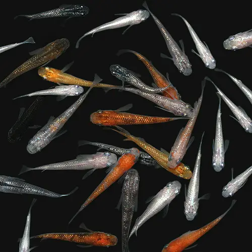

- 体外光

光をよく反射する鱗が多い改良種であり、特に水面地近くで強く光る為、鉢や水草水槽などの瞬間的に鑑賞できるレイアウトに適している。代表種には幹之（みゆき）やラメがある。- 体内光

鱗ではないなく皮下が反射しているように見える鱗を持つ改良種。反射の明るさは体外光には劣るが、幻想的な魅力を持つ。- 透明（スケレトン）

厳密には体内光の一種であり、鱗が透けて見える改良種。様々な色メダカの血統と合わさると小さな色変化もはっきり見えるようになり、独特な趣がある。- 多くの虹色素胞改良種は上から観賞されることを前提として作られている為、ビオトープなどの飼育環境に適しています。この改良だけでは生体の行動の制限や負荷は少ないので、基本的には自然種と変わらない飼育方法で問題はありません。レアケースとして、メダカ同士の色が違いすぎると別種の競争相手とみなし喧嘩をすることがあるので、その場合に隔離などの処置がすぐできるように観察するといいでしょう。